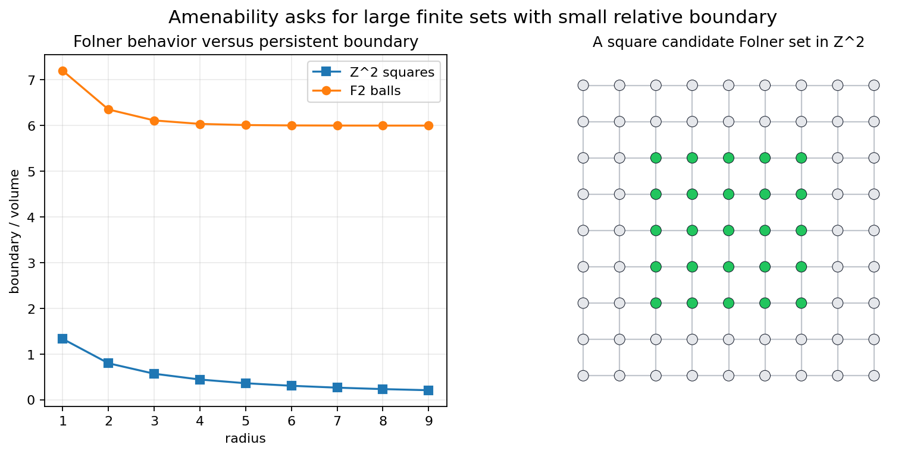
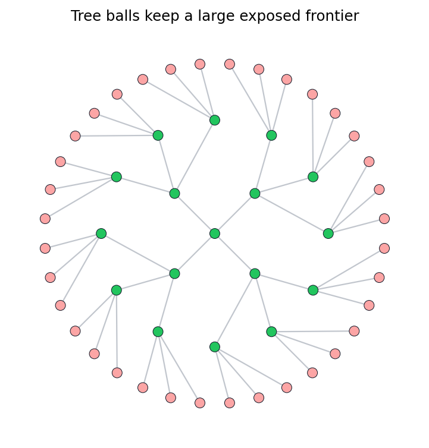

When can a group support an average that does not notice translation?
Source span. Printed pages 289-316; PDF pages 300-327.
Notebook. Geometric-Group-Theory-An-Introduction/part-03-geometry-of-groups/chapter-09-amenable-groups/09-amenable-groups.ipynb
A mean on bounded functions is a functional \(m\) satisfying:
For a finite generating set \(S\), a sequence \(F_n\) should satisfy
The set is allowed to move, but the moved part must become negligible.
Inspection habit. Watch the rim, not the center. If the rim loses relative weight as the region grows, the finite window is behaving like a good averaging witness.
For a finite set \(F\) in a Cayley graph, count the edges labelled by \(S\) that leave \(F\).
Amenable behavior means there are finite \(F_n\) with \(\rho_S(F_n)\to 0\).
number of selected vertices
moves that leave the set
Boxes \(F_n=[-n,n]^d\cap\mathbb{Z}^d\) are standard witnesses.
Thus \(|\partial F_n|/|F_n|\) has order \(1/n\).
Changing the shape can change early ratios. The invariant question asks whether some growing family can drive the ratio down.

The chapter check records sampled square ratios:
and asserts that the sampled sequence decreases.
last sampled square boundary ratio
monotone decrease recorded in JSON

In a free group \(F_k\), the Cayley graph is a regular tree. Balls have many outward edges because every frontier vertex opens new directions.
saved free-tree ratios in the chapter check
persistent frontier blocks Følner behavior
If a group can be partitioned into pieces that, after translations, reassemble into two full copies, a normalized invariant mean would imply
So paradoxical decompositions rule out amenability.
An exact averaging functional exists on bounded functions and ignores left translation.
Finite sets become almost invariant under each generator as their size grows.
The group cannot be cut into finitely many translated pieces that reassemble into two copies.
For finitely generated groups, amenability survives quasi-isometry.
If finitely generated groups \(G\) and \(H\) are quasi-isometric, then \(G\) is amenable exactly when \(H\) is amenable.
The proof uses bounded geometry: images of finite sets are thickened so that holes and bounded distortions do not overwhelm volume.
Lab question. Which finite differences are shape artifacts, and which differences survive after the chosen family grows?
Deliverable. A plot is not enough. Save a check that records the sampled ratios and the claim the ratios support.